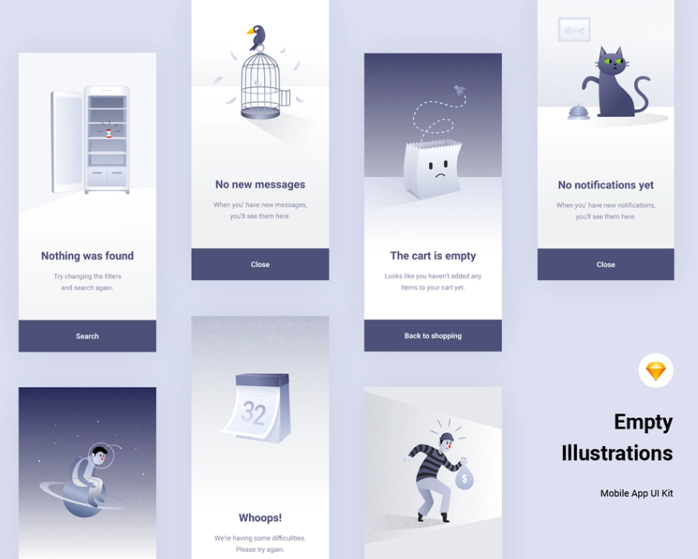
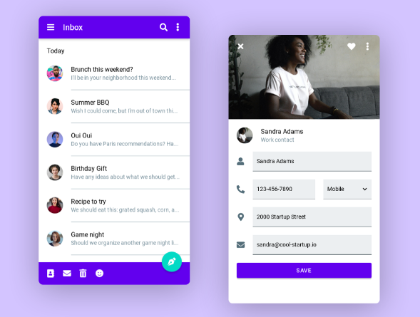

What is Material Design?
Material Design is an Android-oriented design language created by Google, supporting onscreen touch experiences via cue-rich features and natural motions that mimic real-world objects.
Designers optimize users’ experience with 3D effects, realistic lighting and animation features in immersive, platform-consistent GUIs.
Material

